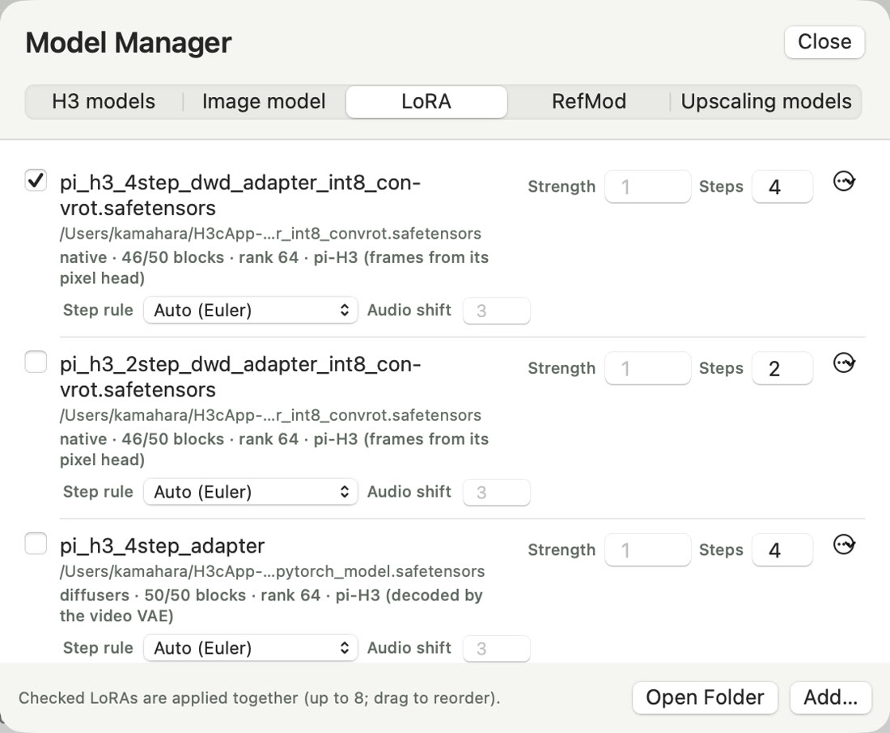
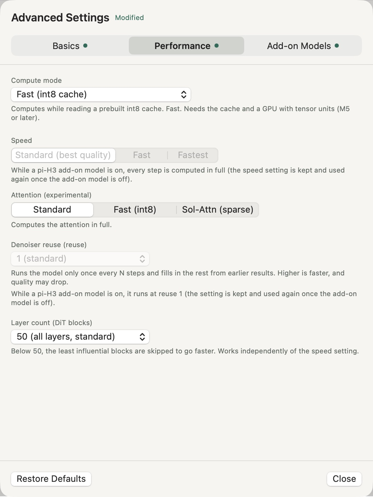

pi-H3 (an add-on model that generates in 2 or 4 steps)
pi-H3 is an add-on model that lets MiniMax H3 generate in 2 or 4 steps. You register it the same way as a LoRA and turn it on. H3cApp supports it from v0.12.0. Compared with the standard 20 steps, generation takes about a fifth of the time at 4 steps and about a tenth at 2 steps.
What pi-H3 is
pi-H3 is an add-on model (an adapter) for MiniMax H3 published by Hansheng Chen and colleagues. It is distilled to generate in few steps and comes for 2 steps and for 4 steps.
MiniMax H3 normally makes a video in this order.
- It reads the text (the text encoder).
- It refines the makings of the video and the sound from noise, a little at a time (the DiT). By default it repeats this 20 times.
- It turns those makings into video frames and sound (the VAE).
pi-H3 shortens the second and the third.
- It repeats the second 2 or 4 times. Most of the generation time is spent there, so this is where most of the gain comes from.
- It replaces the video part of the third with the add-on model's “pixel head” (in the kind with the pixel head). The pixel head produces the frames with 8 layers where the video VAE has 36, so turning the result into video is faster. The sound is converted as before.
There is also a kind without the pixel head, which leaves the third to the video VAE. Both are used the same way.
Compare the results
All video and audio on this page is AI-generated (with H3cApp, using MiniMax H3 and pi-H3). Three prompts were generated once each with six methods. Choose which two to put side by side.
Different methods can give different scenes even from the same seed. What to look at here is not the detail of one scene but how well-formed a video each method gives.
The prompts
- Cat and yarn: A small orange cat plays with a ball of yarn on a wooden floor in soft afternoon light. Static camera, gentle movement. Soft room ambience, no speech.
- Guitar player: A street musician plays an acoustic guitar in a quiet stone plaza at dusk, warm lights in the windows behind him. Slow push-in camera. Gentle guitar melody, distant footsteps, no speech.
- Talking: A young woman with short black hair, wearing a navy blazer, stands in a bright university hallway and speaks directly to the camera with a friendly smile, saying: "Welcome to our campus. Let me show you around." Medium close-up, static camera. Clear voice, quiet indoor ambience, no music.
Every clip is a video generated by AI in H3cApp from text alone (672×384, 5 seconds, seed 42, M5 with 24 GB). The four pi-H3 clips were generated on November 22, 2026; the standard 20 steps and the Turbo LoRA were generated from the same prompts and seed on November 9, 2026. They are compressed again for this page, so fine texture is lower than in the original videos.
With sound
pi-H3 makes the video and the sound together too. Below is a video as AI generated it with pi-H3 at 4 steps (pixel head), with its sound (press play to hear it).
pi-H3, 4 steps (pixel head) · landscape, medium (672×384) · 5 seconds · with sound
Time and memory
| Method | Generation time | Of which, into video |
|---|---|---|
| Standard, 20 steps | 10 min 45 s | — |
| Turbo LoRA, 4 steps | 3 min 02 s | — |
| pi-H3, 4 steps (pixel head) | 2 min 18 s | 4 s |
| pi-H3, 2 steps (pixel head) | 1 min 08 s | 4 s |
| pi-H3, 4 steps (video VAE) | 3 min 05 s | 59 s |
| pi-H3, 2 steps (video VAE) | 2 min 04 s | 59 s |
- Time: with the pixel head, 4 steps took 44 s less than the Turbo LoRA at the same 4 steps. The difference is the conversion into video: about 59 s in the video VAE, about 4 s in the pixel head. Without the pixel head, 4 steps take about as long as the Turbo LoRA. At 512×512 for 3 seconds, the standard 20 steps took 206 s, 4 steps with the pixel head 68 s, and 2 steps 37 s. The first generation after starting the app takes about 15 s longer.
- Into video: the pixel head turned 512×512 for 3 seconds (73 frames) into video in about 3 s. The video VAE took about 38 s for the same. At 960×544 for 5 seconds (124 frames) the pixel head took 7.7 s.
- Memory: at 832×480 for 5 seconds and 4 steps, the kind with the pixel head peaked at 4.7 GiB while denoising and 2.2 GiB in the pixel head. The kind without it peaked at 3.7 GiB while denoising and 4.3 GiB in the video VAE. For both, reading the text (about 4.9 GiB) was the largest stage (measured with the engine alone).
- A large size: 1344×768 for 5 seconds at 4 steps (with the pixel head) took about 18 minutes; the largest stage was the denoising, at 7.3 GiB.
The prompts differ from one another. The numbers are a guide. No image-quality metrics (MUSIQ and the like) were measured.
What you need
1. H3cApp v0.12.0 or later
v0.11.0 and earlier do not support pi-H3.
2. A MiniMax H3 model whose AdaLN is in the “curve” form
pi-H3 is applied on top of a MiniMax H3 model whose AdaLN is in the “curve” form (ComfyUI's pruned format). It was checked with a model imported from unsloth's minimax_h3_fl2va_pruned-Q4_K.gguf (Using GGUF models).
It was not checked with a model whose AdaLN is in the “dense” form (the official weights, for one). With a model that does not fit, an error is shown when the generation starts (Troubleshooting).
3. The pi-H3 files
H3cApp does not download pi-H3. Download what you will use from Lakonik/pi-H3 on Hugging Face. There are four; one is enough.
| Kind | Steps | File to download | Size |
|---|---|---|---|
| With the pixel head | 4 | pi_h3_4step_dwd_adapter_int8_convrot.safetensors, or diffusion_pytorch_model.safetensors in the pi_h3_4step_dwd_adapter folder | 2.2 GB, or 3.8 GB |
| 2 | pi_h3_2step_dwd_adapter_int8_convrot.safetensors, or diffusion_pytorch_model.safetensors in the pi_h3_2step_dwd_adapter folder | 2.2 GB, or 3.8 GB | |
| Without the pixel head | 4 | diffusion_pytorch_model.safetensors in the pi_h3_4step_adapter folder | 0.5 GB |
| 2 | diffusion_pytorch_model.safetensors in the pi_h3_2step_adapter folder | 0.5 GB |
- With the pixel head, either of two forms works. The single file whose name ends in
_int8_convrot.safetensors(2.2 GB), ordiffusion_pytorch_model.safetensorsin thepi_h3_4step_dwd_adapterandpi_h3_2step_dwd_adapterfolders (3.8 GB each, from v0.12.1). They are the same add-on model; the single file is quantized to int8. The same seed gives almost the same scene, in the same time. The single file, a smaller download, is enough. - Without the pixel head, download the folder, or save the file so that its folder's name can be told. Both files are named
diffusion_pytorch_model.safetensors, so H3cApp tells them apart by the folder's name (pi_h3_4step_adapter) and reads the step count from it. - The publishers recommend the kind with the pixel head.
How to use it
Available from v0.12.0. The files in the folders with the pixel head (3.8 GB) are read from v0.12.1.

- Open “Model Manager” from the toolbar and choose the “LoRA” tab.
-
Choose the file you downloaded with “Add…”. For the kind without the pixel head, choose
diffusion_pytorch_model.safetensorsinside the folder. If the file is in Downloads or Documents, the app asks whether to move it into its LoRA folder. Moved, a file without the pixel head is named after the folder it came from, such aspi_h3_4step_adapter.safetensors. - Check the row. If it reads “pi-H3 (frames from its pixel head)” or “pi-H3 (decoded by the video VAE)”, the file was read as pi-H3. Check too that the “Steps” field holds 4 or 2. If it is empty, type the number that file is for (4 or 2).
- Turn on the one you will use. Use the row's checkbox, or “Add-on models (LoRA)” on the “Add-on Models” tab of “Advanced Settings”. “Steps” switches to the number that file is for (4 or 2). Leave “Strength” blank (1).
- Generate as usual. The prompt, the size and the length are chosen as before. Progress is shown as “Denoising 2/4 steps” and then “Decoding to video”.
- To go back to the standard generation, turn it off. The steps go back to what they were, and the speed and the other settings are used again.
What changes while it is on

- The step count is the one the file is for, and no other. 4 for a 4-step file, 2 for a 2-step file. With another number, a line above the generate button reads “The add-on model “…” (pi-H3) is for 4 steps. Set “Steps” in Advanced Settings to 4”, and nothing is generated.
- “Speed” is not used. Even with “Fast” or “Fastest” chosen, every step is computed in full. pi-H3 has too few steps to reuse results between them. The token reduction “Fastest” uses was also found to break the pixel head's picture.
- “Denoiser reuse” runs at 1.
- The settings are not lost. What you chose for “Speed” and “Denoiser reuse” is kept and used again once pi-H3 is off.
- A video's record holds what ran. “Settings Used…” and the video's record (
.json) say “Standard (best quality)” and “reuse 1”. - The time estimate is worked out separately, from generations that used the pixel head.
Which one to choose
| What you want | Choose |
|---|---|
| To try it first | With the pixel head, 4 steps |
| The shortest time | With the pixel head, 2 steps. Detail is softer than with 4 steps. |
| A small download | Without the pixel head (0.5 GB). The video VAE still converts the video, which takes that much longer. |
| The same video VAE as the standard generation | Without the pixel head, 4 steps |
- It is mostly the step count that decides the scene. From the same prompt and seed, the kinds with and without the pixel head gave almost the same scene at the same step count. The 2-step and the 4-step files give different scenes.
- Detail with the pixel head is slightly softer, seen at full size, than when the video VAE finishes the video.
- Turn on only one. With two pi-H3 files on at once, an error is shown when the generation starts. Stacking it with a Turbo LoRA or another few-step LoRA was not checked.
With other features
| Feature | With pi-H3 |
|---|---|
| From text | Works. |
| First/last image | Works. The video begins and ends with the images you chose. |
| Reference images, videos and audio | Run with one reference picture; the picture was not broken. The publishers name text, a first frame and a last frame as what the adapters support. |
| Continue This Video | Works. The part carried over (the last 22 frames) is drawn again by the pixel head, so it is not exactly the picture of the original video. |
| Showing the progress picture | Works. |
| Compute mode | “Fast (int8 cache)”, “Low memory (SSD streaming)” and “Resident” all worked. At 512×512 for 3 seconds and 4 steps (with the pixel head) they took 68 s, 107 s and 290 s in that order. Resident used up to 21.4 GiB of memory (on the M5 with 24 GB). |
| Speed (Fast, Fastest), Denoiser reuse | Not used (What changes while it is on). |
| Attention “Fast (int8)” (the former fast mode), changing the layer count | Run once each with the engine alone; the picture was not broken. Not checked in the app. |
| Attention “Sol-Attn (sparse)” (experimental) | At 2 steps (with the pixel head), 864×480 and 5 seconds, the whole generation went from about 137 s to about 101 s (Faster (0.5)) and about 95 s (Fastest (1.0)), with about 1 GB more memory. The same seed gives a different composition and sound from Standard (M5 with 24 GB, one run each; see Attention). |
| Upscale 2x | Not checked. |
| HyperFlow H3 Flash, still images | Not available. pi-H3 is for video with the standard MiniMax H3. |
Troubleshooting
- “The add-on model “…” (pi-H3) is for 4 steps” is shown and nothing is generated
- Set “Steps” on the Basics tab of “Advanced Settings” to the number shown. If a 2-step file is said to be for 4 steps, change the “Steps” field of its row in the “Model Manager” to 2.
- “The add-on model “…” (pi-H3) generates in 2 or 4 steps” is shown
- This is shown when the step count could not be read from the file name. Set “Steps” to 2 or 4. If you type the number the file is for into the “Steps” field in the “Model Manager”, the steps switch by themselves from then on.
- Right after starting: “a pi-H3 adapter needs a curve-form ("pruned", rank 8) MiniMax H3 checkpoint”
- The AdaLN of the MiniMax H3 model in use is not in the “curve” form. Switch to a model imported from a pruned GGUF (What you need).
- In v0.12.0 the list says “Can't be loaded for MiniMax-H3: /Users/…” (the rest of the reason is cut off)
- You chose the file inside the
pi_h3_4step_dwd_adapterorpi_h3_2step_dwd_adapterfolder. v0.12.0 cannot read that form. Update to v0.12.1, or usepi_h3_4step_dwd_adapter_int8_convrot.safetensors. From v0.12.1 the reason a file can't be loaded is shown to its end. - “only one pi-H3 adapter can be applied at a time”
- Two pi-H3 files are on. Leave one on.
- It is listed as “diffusion_pytorch_model.safetensors” or “LoRA”, with no step count
- The file is somewhere its folder's name does not say what it is. Type 4 or 2 into the “Steps” field, or put the file into a folder named
pi_h3_4step_adapterand register it again. - With the pixel head at 2 steps, the picture is soft
- Switch to the 4-step file, or try the kind without the pixel head.
Using it from the API
With the app's API (POST /api/generate), put the name from the list into loras and the step count the file is for into steps. GET /api/loras gives the names.
{
"prompt": "A cat playing with a ball of yarn.",
"size_profile": "square-medium",
"seconds": 3,
"loras": ["pi_h3_4step_dwd_adapter_int8_convrot.safetensors"],
"steps": 4
}- Without
steps, the step count the file is for is used. - A step count the file is not for is answered
409with the reason, before the generation starts. speed_modeandreuseare not used. The video's record saysqualityand reuse 1.- To use Sol-Attn (sparse), add
"sol_attention": trueandsol_tau(0.5or1.0); only on supported M5 setups.
The whole API is described in the API reference.
What was checked
- The Mac: one M5 with 24 GB. Nothing was run on an M1 to M4. On a Mac other than an M5 the pixel head computes in F32, not int8 (that path was run on the M5; it is 46 dB from the int8 result).
- What was checked: generating with each of the four files (with the pixel head, both the single file and the file in the folder), a first image, first and last images, a reference picture, a continuation, the progress picture, the three compute modes, 960×544 and 1344×768 for 5 seconds, and that a step count that does not fit is refused before the generation. The videos were looked at as sheets of frames.
- The pixel head's computation: against a separate implementation (numpy) written from the publishers' description, it is within 1 of 255 in F32 and at 46 dB with the int8 the M5 uses.
- Not checked: a model whose AdaLN is in the “dense” form, a Mac with 16 GB or less, upscaling 2x, listening to the sound against the other methods, image-quality metrics.
- Records: the name of the add-on model that was on is kept in the video's record and in the project.
Weights and license
- The pi-H3 weights are published by Hansheng Chen and colleagues on Hugging Face. They are explained in the publishers' blog and in the paper “Decoding Without a Decoder”.
- The publishers state that pi-H3 is a Model Derivative of MiniMax H3 and that the MiniMax H3 Community License applies. It is not an official MiniMax model (Powered by MiniMax H3).
- H3cApp does not include the weights. Before downloading, read the publishers' license and notices. Which terms apply to your use is for you to judge.
- H3cApp's support for pi-H3 was written independently, from reading the published weights, description and code. The publishers' code was not run.
See License for more. Add-on models in general are covered in Using add-on models (LoRA).